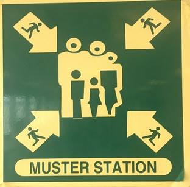
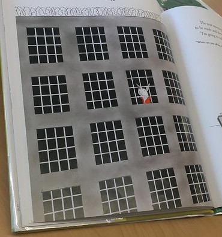
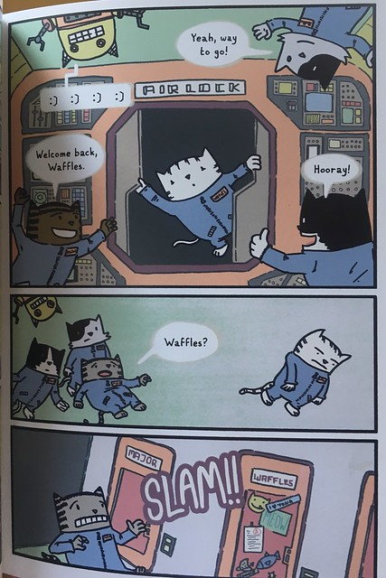
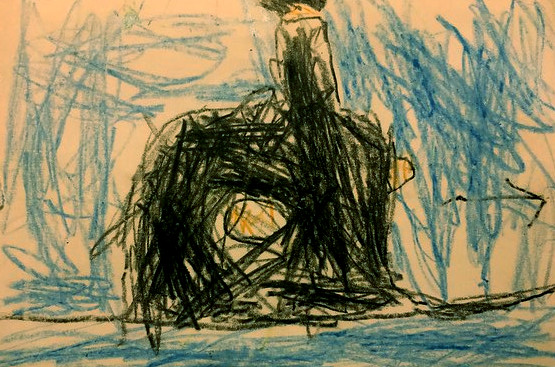
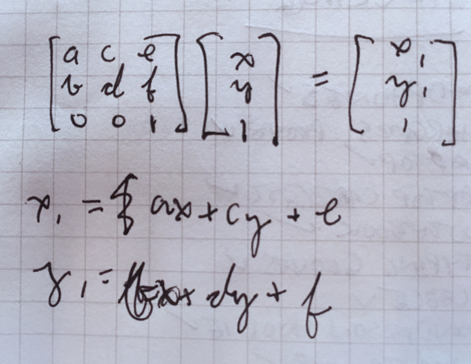

Express things you can't express with words in boxes.




Create images dynamically that don't exist
Why draw on the web?
Make it available to anyone with a computer, regardless of OS or
device*
*Check MDN for the specific feature you're using, and always check on
Mobile Safari.
Where do I draw?
SVG
Canvas
The "normal" DOM!
SVG
Vector graphics
Declarative, retained mode
Takes up memory because of DOM records
After a certain number of nodes,
browsers struggle. (Exact amount will depend on the future power of computers and
browsers).
Highly inspectable and debuggable, however.
Free zoom
Free interactive model (click events)
Good text rendering
Drawing a line in SVG
Right-click and inspect to see what's involved.
SVG +y is down, following UI conventions, rather than math
conventions.
stroke DOM attribute (or CSS attribute) determines color.
Drawing a circle in SVG
You can change the fill in CSS. Try it out.
Drawing a rectangle in SVG
viewBox lets you not think about how big the svg element actually is.
What about arbitrary shapes?
That's what paths are for.
path element `d` attributes have their own small DSL. Ugly that so
many instructions are crammed into a single attribute.
Draw lines to points, make arcs, make bezier curves, a bunch of other
stuff.
Bezier curve example: Move cursor to 35, 11, then make several Bezier
curves. Each curve has three x-y points: the start control point, the
end control point, and end point.
(Also, the viewBox on this one is made to accommodate negative
cooredinates. Check it out.)
Bezier curves
Bezier curves let you form a lot of aesthetically satisfying lines.
They're a core component of Adobe Illustrator and other drawing
programs.
If you want to draw an unnameable shape, then paths are the way to go.
In fact, if you want to draw something that almost looks like a
nameable shape but has some irregularity or distoration, paths are the
way to go. e.g:
Does not take up as much memory as SVG. Right now, if you get to
around 10,000 elements, the browser's not going to handle it well. No
problem drawing that many things in Canvas.
You pretty much have to draw the entire thing every frame in most
situations
Can't inspect stuff; after you've called a method, all that's left are
pixels
Blurry text rendering. (May be better now?)
What you need to do to draw on canvas
There's a canvas analogue to almost every primitive available for SVG.
`bezierCurveTo`, `drawRect`, etc.
Get a context, which is your JS interface to a canvas element's
contents.
Hook into `requestAnimationFrame` or something that uses it to know
when to draw. Without that, you can tie up the event loop.
Keep track of how much time has passed since the last draw.
Apply your own transforms to each thing you draw.
Figure out an "object" on the canvas was clicked or not. One way: Have
an invisible canvas with a different color for each object. On a
click, find out what color was at the pixel that was clicked.
Animating
Animating is just drawing something different over time!
On Canvas, you can animate by:
Drawing something slightly different each frame. How different?
Usually depends on how much time has passed.
On SVG, you can animate by:
Changing the attributes of an element every frame, similar to
canvas animation.
Transforms are math done to one or more points. In SVG, they usually
apply to an element hierarchy. In canvas, they usually apply to a
context and affect everything drawn to that context.
There are
generic matrix APIs
that multiply every point in the target by a 3x3 matrix.

There are common transforms, like rotating, scaling, and translating.
These are sort of like the circle, rect, and line of transforms. The
browser provides specific methods for these even though you can just
do it with the generic transform APIs.
CSS also has transforms, which can apply to normal HTML elements as
well as SVG.
Rotating an image involves a surprising amount of work. If you just
rotate it, it will rotate around the top left corner.
One weird old trick
This app, Spinners, is made to spin various images in various
formations.
Started out with
all SVG animation, but started to lock up on Safari.
animateTransform does not respect the event loop.
Rewrote for canvas, but things got choppy on iOS (but at least responded).